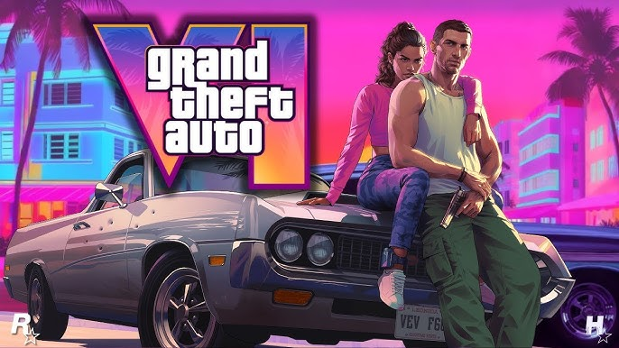

Portal de notícia de Jogos
Minecraft

Minecraft é um dos jogos mais populares do mundo, conhecido por sua liberdade criativa. Nele, os jogadores
podem explorar mundos infinitos, coletar recursos e construir desde pequenas casas
até cidades gigantes. Além disso, o jogo tem modos de sobrevivência, aventura e criativo, permitindo que
cada pessoa jogue da forma que mais gosta. É também muito usado na educação,
por estimular a criatividade e o raciocínio lógico.
Gta VI

GTA VI é um dos jogos mais aguardados da atualidade. Desenvolvido pela Rockstar Games, promete gráficos
realistas, uma cidade viva e cheia de detalhes, além de novas possibilidades de jogabilidade. A expectativa
é que traga personagens marcantes e uma narrativa envolvente, mantendo o estilo polêmico e divertido que
sempre marcou a franquia. Sua revelação já gerou enorme impacto na comunidade gamer.
Roblox

Roblox é uma plataforma de criação e jogos online que permite que qualquer pessoa desenvolva seus próprios
mundos e experiências. Diferente de outros jogos, ele é feito por jogadores para jogadores, com uma
infinidade de minigames de diferentes estilos: aventura, simulação, corrida, terror e muito mais. Além
disso, é um espaço de socialização, onde milhões de pessoas do mundo todo interagem e se divertem juntas.